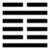

Thủy Lôi Truân (屯 chún)
Theo Tự quái truyện thì sở dĩ sau hai quẻ Càn, Khôn tới quẻ Truân là vì có trời đất rồi vạn vật tất sinh sôi nảy nở đầy khắp, mà lúc sinh sôi đó là lúc khó khăn. Chữ Truân [屯] có cả hai nghĩa đó: đầy và khó khăn
屯 : 元, 亨, 利, 貞, 勿 用 有 攸 往, 利 建 侯 ．
Truân: Nguyên, hanh, lợi, trinh, vật dụng hữu du vãng, lợi kiến hầu.
Dịch: Gặp lúc gian truân, có thể hanh thông lắm (nguyên hanh), nếu giữ vững điều chính (trái với tà) và đừng tiến vội, mà tìm bậc hiền thần giúp mình (kiến hầu là đề cử một người giỏi lên tước hầu).
Giảng: Thóan truyện và Đại tượng truyện giảng đại ý như sau:
Tượng quẻ này là sấm (Chấn) ở dưới mà trên mưa (Khảm), tức có nghĩa động ở trong chốn hiểm, (Khảm là nước có nghĩa là hiểm trở) (1) cho nên có nghĩa là truân.
Lại thêm: nội quái có một hào dương (cương) hai hào âm (nhu); ngọai quái cũng thế; như vậy là cương nhu, dương âm bắt đầu giao nhau để sinh vạn vật màl úc đầu bao giờ cũng gian nan: truân.
Trong lúc gian nan mà hành động thì có thể tốt, nhưng phải kiên nhẫn giữ điều chính; đừng vội hành động mà trước hết nên tìm người tài giỏi giúp mình. Người tài đứng ra cáng đáng lúc đầu (người mình cất nhắc lên tước hầu) đó là hào 1 dương. Dương thì cương, có tài; hào 1 lại là hào chủ yếu torng nội quái (chấn) có nghĩa họat động. buổi đầu gian nan thì được người đó, tỉ như lập được một đòan thể có nhiều người có tài kinh luân, thì mọi việc sẽ làm được tốt. Đó là ý nghĩa quẻ Truân.
Ý nghĩa các hào :
初 九: 磐 桓, 利 居 貞, 利 建 侯 ．
Sơ cửu: Bàn hoàn, lợi cư trinh, lợi kiến hầu.
Dịch: Hào 1, dương : còn dùng dằng, giữ được điều chính thì lợi, được đặt lên tước hầu (nghĩa là được giao cho việc giúp đời lúc gian truân) thì lợi.
Giảng: Như trên tôi đã nói, hào này là dương, tượng người có tài, lại đắc chính vì dương ở dương vị, cho nên giữ được điều chính và có lợi; sau cùng nó là dương mà lại dưới hai hào âm trong nội quái, có cái tượng khiêm hạ, được lòng dân. Vậy là người quân tử mới đầu tuy còn do dự, sau sẽ được giao cho trọng trách giúp đời.
六 二: 屯 如 邅 如, 乘 馬 班 如, 匪 寇 婚 媾 ． 女 子 貞 不 字, 十 年 乃 字 ．
Lục nhị: Truân như, chuyên như, thừa mã ban như. Phỉ khấu hôn cấu, nữ tử trinh bất tự, thập niên nãi tự.
Dịch: hào 2, âm : Khốn đốn khó khăn như người cưỡi ngựa còn dùng dằng lẫn quẩn (Nhưng hào 1 kia) không phải là kẻ cướp, chỉ là muốn cầu hôn với mình thôi. Mình cứ giữ vững chí, đừng chịu, mười năm nữa sẽ kết hôn (với hào 5).
Giảng: Hào 2, âm, vừa đắc trung lẫn đắc chính, lại ứng với hào 5 cũng đắc trung đắc chính ở trên, như vậy là tốt. Chỉ hiềm cách xa hào 5 mà lại ở sát ngay trên hào 1, dương, bị 1 níu kéo, cho nên còn ở trong cảnh truân chuyên (khó khăn). Nhưng đừng ngại, hào 1 có tư cách quân tử, không phải là kẻ xấu muốn hảm hại mình, chỉ muốn cưới mình thôi (1 là dương, 2 là âm). Đừng nhận lời, cứ giữ vững chí, mươi năm nữa sẽ kết hôn với hào 5.
Chữ tự [ 字 ] ở đây nghĩa là gả chồng. Theo kinh Lễ, con gái tới tuổi gã chồng thì cài trâm và đặt tên tự.
六 三: 即 鹿, 无 虞, 惟 入 于 林 中． 君 子 幾, 不 如 舍, 往 吝 ．
Lục tam: Tức lộc, vô ngu, duy nhập vu lâm trung. Quân tử cơ, bất như xả, vãng lận.
Dịch: Hào 3 âm: đuổi hươu mà không có thợ săn giúp sức thì chỉ vô sâu trong rừng thôi (không bắt được). Người quân tử hiểu cơ sự ấy thì bỏ đi còn hơn, cứ tíếp tục tiến nữa thì sẽ hối hận.
Giảng: Hào 3 là âm, ở dương vị, bất chính bất trung; tính chất đã không tốt mà ở vào thời truân; hào 6 ở trên cũng là âm nhu không giúp được gì mình, như vậy mà cứ muốn làm càn, như người ham đuổi hươu mà không được thợ săn giúp (chặn đường con hươu, đuổi nó ra khỏi rừng cho mình bắt) thì mình cứ chạy theo con hươu mà càng vô sâu trong rừng thôi. Bỏ đi là hơn.
六 四: 乘 馬 班 如 ． 求 婚 媾, 往 吉, 无 不 利 ．
Lục tứ: Thừa mã ban như. Cầu hôn cấu, vãng cát, vô bất lợi.
Dịch: Hào 4, âm: cưỡi ngựa mà dùng dằng. Cầu bạn trăm năm (hay đồng tâm) ở dưới (ở xa) thì không gì là không tốt.
Giảng: Hào này âm nhu, đắc chính là người tốt nhưng tài tầm thường, gặp thời Truân không tự mình tiến thủ được. Tuy ở gần hào 5, muốn cầu thân với 5, nhưng 5 đã ứng với 2 rồi, thế là 4 muốn lên mà không được, như người cưỡi ngựa muốn tiến mà dùng dằng. Chu Công khuyên hào 4 nên cầu hôn với hào 1 ở dưới thì hơn: (vì 1 có tài đức) mà cùng nhau giúp đời, không gì là không lợi.
Chúng ta để ý: cặp 5-2 rất xứng nhau, cả hai đều đắc chính, đắc trung, rất đẹp, cặp 4-1 không đẹp bằng: 4 bất trung, kém 2; cho nên phải kết hợp với 1 ở dưới, 1 tuy ở dưới mà đắc chính, như vậy là xứng đôi. Đó là luật: “dĩ loại tụ”, họp với nhau thì phải xứng nhau, đồng tâm, đồng đạo.
九 五: 屯 其 膏; 小 貞 吉, 大 貞 凶 ．
Cửu ngũ: Truân kì cao; tiểu trinh cát, đại trinh hung
Dịch: Hào 5, dương: Ân trạch không ban bố được (nguyên văn: dầu mỡ (cao) không trơn (truân), chỉnh đốn việc nhỏ thì tốt, việc lớn thì xấu.
Giảng: Hào cửu ngũ này vừa chính vừa trung, ở địa vị chí tôn, đáng lẽ tốt; nhưng vì ở trong thời gian truân (quẻ Truân) lại ở giữa ngọai quái là Khảm, hiểm, nên chỉ tốt vừa thôi. Hào 2 tuy ứng với nó nhưng âm nhu, không giúp được nhiều; lại thêm hào 1 ở dưới, có tài đức, được lòng dân, uy quyền gần như lấn 5, mà ân trạch của 5 không ban bố khắp nơi được. Cho nên 5 phải lần lần chỉnh đốn các việc nhỏ đã, đừng vội làm việc lớn mà hỏng.
Nghĩa là tuy có tài đức, có địa vị, nhưng cũng phải đợi có thế có thời nữa.
上六: 乘 馬 班 如, 泣 血 漣 如 ．
Thượng lục: Thừa mã ban như, khấp huyết liên như.
Dịch: Hào trên cùng âm. Cưỡi ngựa mà dùng dằng, khóc tới máu mắt chảy đầm đìa.
Giảng: Hào này ở trên cùng, là thời gian truân tới cực điểm. Nếu là hào dương (có tài trí) thì gian truân cùng cực sẽ biến thông; nhưng hào này là hào âm, bất tài, bất trí, nhu nhược, chỉ biết lên lưng ngựa rồi mà vẫn dùng dằng mà khóc đến chảy máu mắt (Hào tuy ứng với hào 6 nhưng cũng âm nhu, chẳng giúp được gì.)
Đọc xong ba quẻ đầu này chúng ta cũng đã thấy: thể của hào chỉ cò: âm và dương, vị của hào chỉ có 6: từ hào sơ đến hào thượng; nhưng ý nghĩa mỗi hào rất thay đổi, tùy ý nghĩa của trọn quẻ, cho nên hào 1 dương quẻ Càn không giống hào 1 dương quẻ Truân; hào 5 dương quẻ Truân cũng không giống hào 5 dương quẻ Càn; hào 2 âm quẻ Khốn không giống hào đó quẻ Truân, hào 6 âm quẻ Truân cũng không giống hào đó qủe khôn. ý nghĩa của quẻ quyết định ý nghĩa của hào, nói cách khác: quẻ là cái thời chung của các hào, mà hào là mỗi việc, mỗi hoàn cảnh trong thời chung đó.